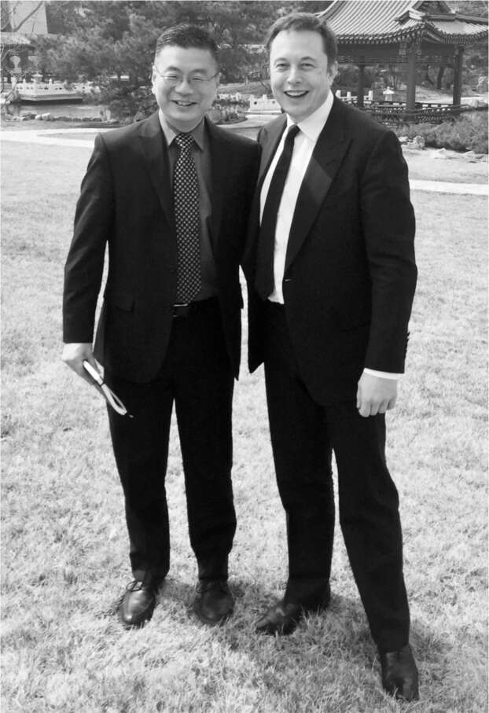

Robin Ren, người Thượng Hải từng đoạt giải Olympic Vật lý và là bạn cùng phòng thí nghiệm với Musk tại Penn, không biết nhiều về xe hơi. Kiến thức ít ỏi của anh chủ yếu đến từ chuyến đi xuyên quốc gia cùng Musk sau khi tốt nghiệp năm 1995. Musk đã dạy anh cách xử lý khi xe BMW bị hỏng và cách lái xe số sàn, những kỹ năng mà anh không cần dùng đến sau khi trở thành giám đốc công nghệ tại công ty con chuyên về ổ đĩa flash của Dell Computer. Chính vì vậy, anh khá bất ngờ trước lời mời ăn trưa tại Palo Alto của Musk hai mươi năm sau đó.
Việc bán xe ở Trung Quốc là chìa khóa cho tham vọng toàn cầu của Tesla, nhưng mọi thứ không diễn ra suôn sẻ. Musk đã sa thải hai giám đốc phụ trách thị trường Trung Quốc liên tiếp, và sau khi công ty chỉ bán được 120 chiếc xe trong một tháng, ông chuẩn bị sa thải toàn bộ đội ngũ cấp cao tại Trung Quốc. "Làm thế nào để tôi có thể khắc phục hoạt động kinh doanh của Tesla tại Trung Quốc?", Musk hỏi Ren trong bữa trưa. Ren thừa nhận mình không am hiểu ngành công nghiệp ô tô và chỉ đưa ra một vài ý kiến chung chung về cách kinh doanh tại Trung Quốc. "Tuần tới tôi sẽ đến Trung Quốc để gặp phó thủ tướng", Musk nói khi họ chuẩn bị rời đi. "Anh có thể đi cùng tôi không?"
Ren do dự. Anh vừa trở về từ một chuyến công tác tại Trung Quốc. Tuy nhiên, anh cảm thấy thôi thúc được tham gia vào sứ mệnh của Musk, vì vậy sáng hôm sau anh đã gửi email cho Musk nói rằng mình sẵn sàng đi. Họ đã có một cuộc gặp gỡ thân mật với phó thủ tướng. Sau đó, họ gặp gỡ một cựu quan chức và các cố vấn khác, những người này nói với họ rằng để thành công trong việc bán xe hơi ở Trung Quốc, Tesla sẽ phải sản xuất xe hơi tại đây. Theo luật pháp Trung Quốc, điều đó đòi hỏi phải thành lập liên doanh với một công ty Trung Quốc.
Musk rất dị ứng với các liên doanh. Ông không giỏi chia sẻ quyền kiểm soát. Vì vậy, ông nhấn mạnh, bằng giọng điệu hài hước quen thuộc, rằng Tesla không muốn kết hôn. "Tesla còn quá non trẻ", ông nói. "Giống như, chúng tôi chỉ mới là một đứa bé. Giờ anh muốn chúng tôi kết hôn sao?". Ông đứng dậy và bắt chước hai đứa trẻ tập đi trong lễ cưới, rồi cười phá lên sảng khoái. Mọi người trong phòng đều cười, phía Trung Quốc thì hơi ngập ngừng.
Trên chuyến bay trở về bằng máy bay riêng của Musk, ông và Ren đã ôn lại kỷ niệm thời đại học và chia sẻ những điều thú vị về vật lý. Chỉ sau khi máy bay hạ cánh, khi họ đang bước xuống cầu thang, Musk mới bất ngờ đặt câu hỏi: "Anh có muốn gia nhập Tesla không?". Ren đồng ý.
Thách thức lớn của Ren là tìm cách sản xuất tại Trung Quốc. Anh có thể thuyết phục Musk từ bỏ sự phản đối và thành lập liên doanh, giống như mọi hãng xe khác đã làm, hoặc anh có thể thuyết phục các nhà lãnh đạo cấp cao của Trung Quốc thay đổi luật lệ đã định hình sự tăng trưởng của ngành sản xuất Trung Quốc trong ba thập kỷ. Anh nhận ra rằng việc thứ hai dễ dàng hơn. Tháng này qua tháng khác, anh vận động hành lang chính phủ Trung Quốc. Bản thân Musk cũng đã quay lại vào tháng 4 năm 2017 để gặp gỡ các nhà lãnh đạo Trung Quốc một lần nữa. "Chúng tôi liên tục giải thích tại sao việc Tesla xây dựng một nhà máy ô tô sẽ giúp ích cho Trung Quốc, ngay cả khi đó không phải là một liên doanh", Ren nói.
Nhằm thực hiện kế hoạch biến Trung Quốc thành trung tâm đổi mới năng lượng sạch của Chủ tịch Tập Cận Bình, cuối cùng, đầu năm 2018, Trung Quốc đã đồng ý cho Tesla xây dựng nhà máy mà không cần phải thành lập liên doanh. Ren và nhóm của anh đã có thể đàm phán một thỏa thuận cho hơn hai trăm mẫu đất gần Thượng Hải cùng với các khoản vay lãi suất thấp.
Tháng 2 năm 2018, Ren bay về Mỹ để thảo luận hợp đồng với Musk. Không may, lúc đó Musk đang bận rộn xử lý các vấn đề sản xuất tại nhà máy pin ở Nevada, nên Ren không thể gặp riêng ông. Cuối đêm đó, họ cùng bay đến Los Angeles, nhưng mãi đến khi hạ cánh Ren mới có cơ hội trò chuyện. Ren bắt đầu trình bày slide với bản đồ, cam kết tài chính và các điều khoản hợp đồng, nhưng Musk không nhìn vào chúng. Thay vào đó, ông nhìn ra cửa sổ máy bay gần một phút. Rồi ông nhìn thẳng vào mắt Ren. "Anh có tin đây là việc đúng đắn không?". Ren ngạc nhiên đến nỗi phải dừng lại vài giây trước khi trả lời "có". "Được, vậy chúng ta làm thôi", Musk nói rồi rời khỏi máy bay.
Lễ ký kết chính thức với các nhà lãnh đạo Trung Quốc diễn ra vào ngày 10 tháng 7 năm 2018. Musk đến Thượng Hải ngay sau khi tham gia giải cứu đội bóng thiếu niên bị mắc kẹt trong hang động ở Thái Lan bằng chiếc tàu ngầm mini do ông chế tạo. Ông thay bộ vest tối màu và đứng trang nghiêm trong phòng tiệc được trang trí màu đỏ khi mọi người nâng ly chúc mừng. Những chiếc Tesla đầu tiên bắt đầu xuất xưởng vào tháng 10 năm 2019. Trong vòng hai năm, Trung Quốc đã sản xuất hơn một nửa số xe của Tesla.

Với Robin Ren tại Thượng Hải